Herramientas de práctica
Seis herramientas se abren desde la fila de íconos a la derecha de la barra superior. Cada una es un panel flotante sobre el diapasón: arrástralo adonde quieras y ciérralo cuando termines. Cuando los paneles se superponen, presionar uno lo trae al frente, y la disposición se conserva entre sesiones. El mástil sigue visible y utilizable debajo.
Cada panel también se minimiza a una tira de una fila que mantiene activos su control principal y su lectura: el botón de reproducción, el tempo y la lámpara de pulso del metrónomo; el botón Escuchar, la nota y los cents del afinador; Grabar y Reproducir del looper; el fader Mix del mezclador; Monitor y la ganancia de salida del amplificador; Escuchar y el acorde detectado de Detección en vivo. Haz clic en el chevrón junto al botón de cerrar del panel, o doble clic en su encabezado (doble toque en iPad); el mismo chevrón lo expande de nuevo. Qué paneles están minimizados se recuerda entre aperturas, junto con dónde quedaron.
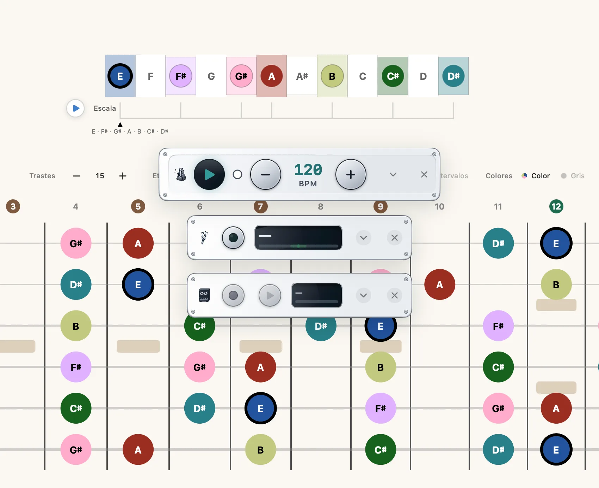
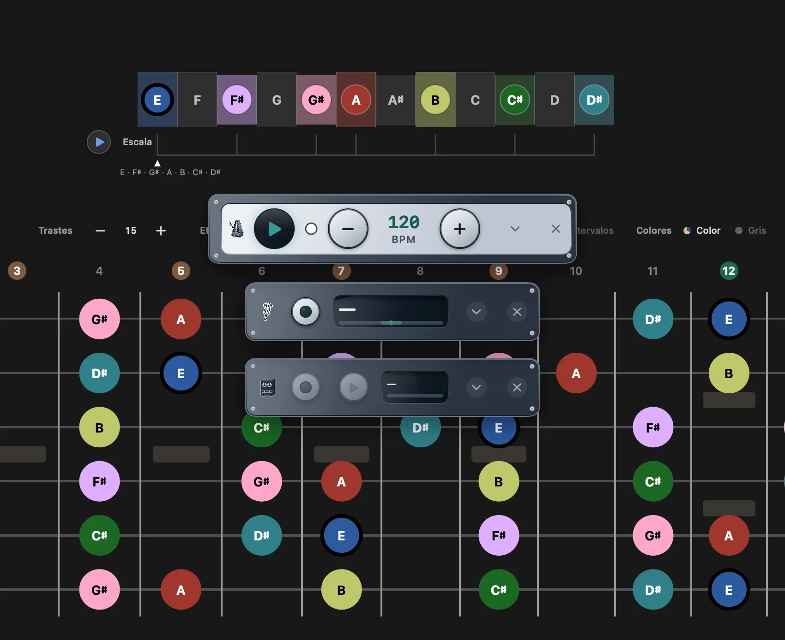
Todo lo de esta página funciona en Mac y iPad. El amp y el looper eran solo para Mac; ahora también funcionan en iPad. Conecta una interfaz de audio USB-C o usa audífonos: monitorear por la bocina integrada retroalimenta el micrófono integrado, y el amp te lo avisará.
Cuatro de estas herramientas son parte de Fretling Pro: el secuenciador de batería, el amp, el looper y Detección en vivo, junto con el modo Precisión del afinador y sus indicadores Trazo, Estroboscopio y Disco. Todo lo marcado Pro más abajo necesita ese desbloqueo único; el resto de la página es gratis. Qué añade Pro tiene la lista completa.
Cada panel está hecho para parecerse al hardware que reemplaza: una placa frontal mecanizada, pantallas empotradas, lámparas indicadoras, perillas de fader moleteadas. Vienen dos acabados: Cromado, un panel claro, y Estudio, uno de grafito. Configuración › Diapasón › Apariencia › Módulos elige entre ellos, y el valor por defecto sigue tu tema: paneles claros en el lienzo claro, grafito en el oscuro.
Cada panel recuerda tres cosas por separado: si está abierto, a dónde lo arrastraste y si lo dejaste plegado a una tira. Vuelven así en el siguiente arranque. Abrir una herramienta desde la barra superior cuando su panel ya está arriba lo eleva en vez de no hacer nada, así que un panel perdido bajo otros tres vuelve al frente. Cada encabezado lleva además una acción Restablecer posición para VoiceOver, por si un panel acaba en un lugar inalcanzable.
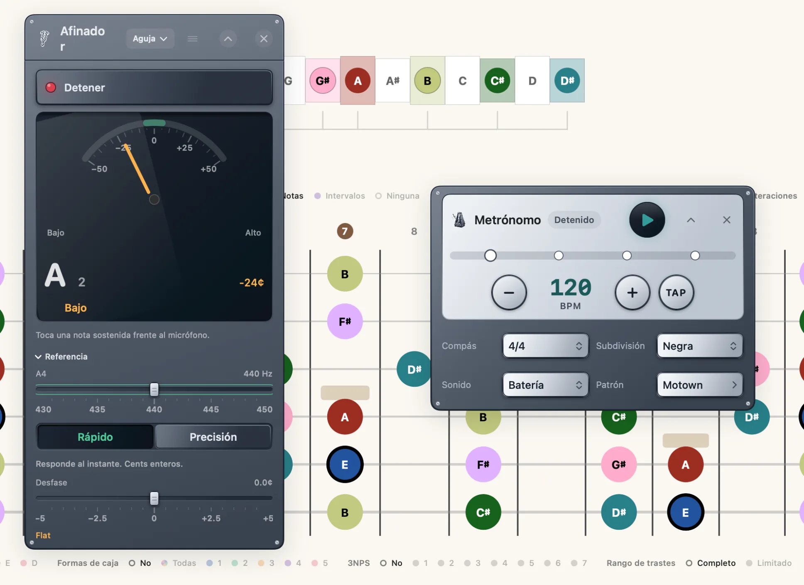
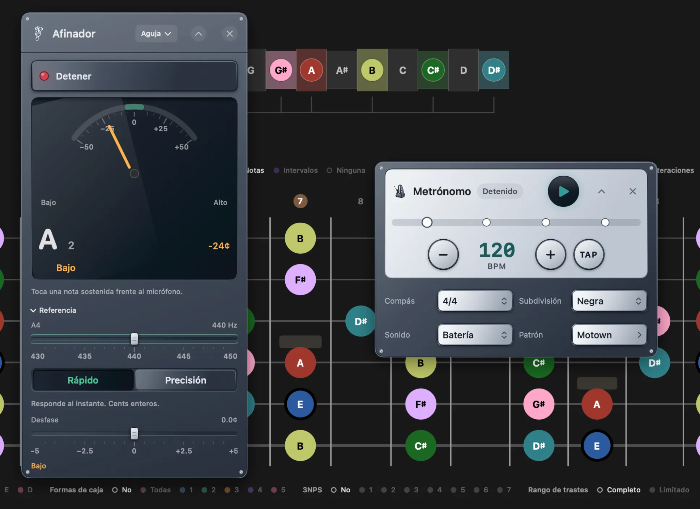
Afinador
Un afinador cromático que escucha por tu micrófono o interfaz de audio. Nombra la nota que estás tocando y muestra cuánto te desvías, en cents.
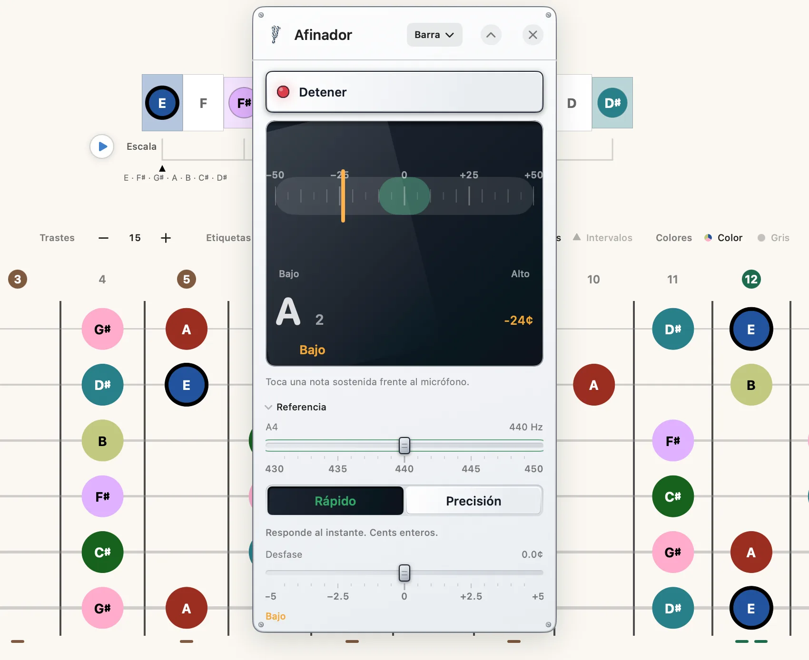
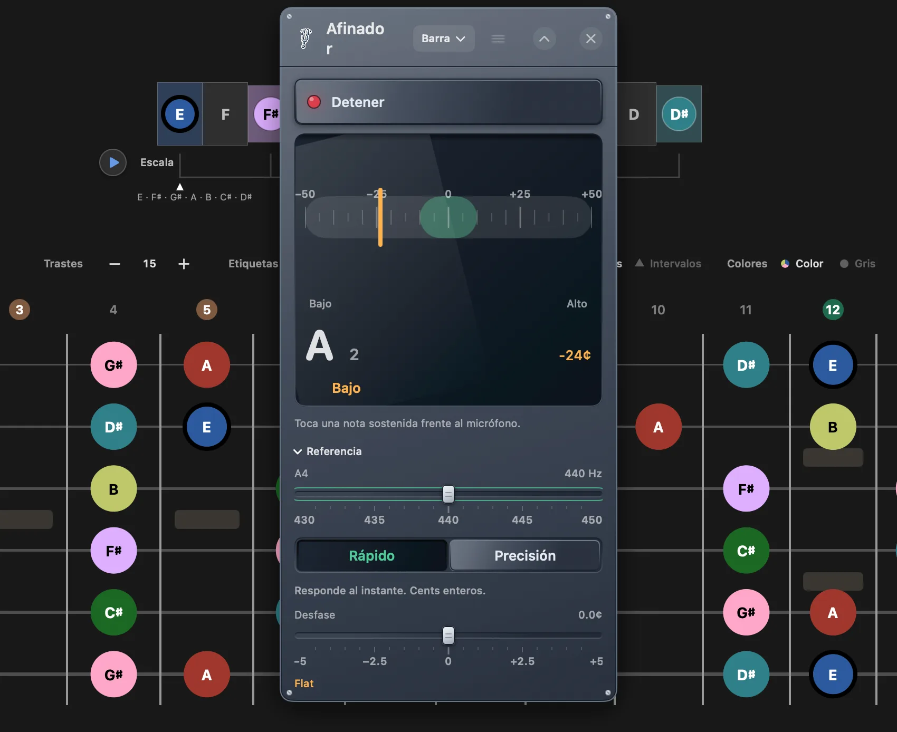
Estilos de indicador
Cinco maneras de dibujar la misma medición: elige la que leas más rápido. El control Indicador es un menú desplegable en el propio encabezado del panel, junto al nombre del afinador, y no allá abajo en los ajustes, porque es algo que cambias mientras estás mirando la lectura. Aguja es el predeterminado; Aguja y Barra son gratis.
- Aguja: una aguja oscilante clásica.
- Barra: una barra horizontal de desviación sobre una escala de cents.
- Trazo Pro: grafica la afinación en el tiempo, así que la deriva y el vibrato se ven. Con Reducir movimiento activado, el trazo barre la pantalla en vez de desplazarse, así que lo que ya dibujó se queda quieto.
- Estroboscopio Pro: una banda estroboscópica que se queda quieta cuando estás afinado.
- Disco Pro: un disco giratorio, visto por una ventana de media luna, que deja de girar en la afinación exacta.
Rápido o Precisión
Son dos instrumentos distintos, no un control de calidad:
| Modo | Lectura | Afinado dentro de | Úsalo cuando |
|---|---|---|---|
| Rápido | Responde de inmediato, en cents enteros | ±5 cents | Reafinas una cuerda a media canción o revisas rápido entre tomas. |
| Precisión Pro | Sostén una nota cerca de un segundo; décimas de cent | ±0.5 cents | Ajustas la guitarra como es debido, con ella en el banco. |
Precisión mide la fase sobre una línea base estable, y por eso necesita una nota sostenida: una lectura por debajo del cent solo es tan buena como el tramo de señal sobre el que se ajustó.
Referencia y calibración
Al final del panel, un desplegable Referencia contiene el interruptor Rápido / Precisión y dos ajustes que fijas una vez y dejas quietos:
- A4: la altura de referencia, de 430 a 450 Hz en hercios enteros, 440 por defecto. Cámbiala para una orquesta que afina en 442 o una grabación en 432.
- Desfase: una corrección manual de hasta ±5 cents, en décimas, para un instrumento o una interfaz que lee siempre alto o bajo. Debajo, cuando el afinador lleva un rato escuchando, una línea informa cuánto se desvía el reloj de tu entrada de audio de su frecuencia nominal, en partes por millón y en cents. Esa parte se mide y se corrige sola, así que el control solo lleva tu propia preferencia.
Metrónomo
| Control | Rango / opciones | Notas |
|---|---|---|
| Tempo | 40–250 BPM, 120 por defecto | Los botones de paso mueven un BPM a la vez; mantén presionado para avanzar de corrido. |
| TAP | — | Marca el pulso y el tempo sigue tus toques. |
| Compás | Once compases: 4/4, 3/4, 2/4, 1/4, 5/4, 6/8, 7/8, 9/8, 12/8, 6/4, 3/8 | El indicador de pulso muestra en qué parte del compás vas. |
| Subdivisión | Negra, Corchea, Tresillo, Corchea con puntillo, Semicorchea | Subdivide el pulso sin cambiar el tempo. Corchea con puntillo es el par largo–corto (una corchea con puntillo y una semicorchea): dos clics por pulso. |
| Sonido | Clásico (predeterminado), Caja china, Clic: gratis. Batería: Pro | Batería reproduce un patrón de batería real en vez de un clic; ver más abajo. Si Batería era tu ajuste cuando terminó una prueba, el metrónomo reproduce Clásico mientras está bloqueado y tu elección se queda intacta, así que al desbloquear la recuperas tal cual. |
| Acento / Patrón | Activado / desactivado, o el ritmo activo | Acentúa el primer tiempo de cada compás. Con Sonido en Batería la celda pasa a ser Patrón, que nombra el ritmo cargado y abre el editor: un patrón de batería se acentúa solo, así que no queda un interruptor muerto ahí. |
En Mac, la barra espaciadora es un solo transporte resuelto y no la tecla de un botón. Si algo está sonando, lo detiene: el clic, el loop o ambos. Si nada suena, arranca el clic, y un loop cargado y detenido arranca con él, en el mismo primer tiempo. Un looper cerrado, bloqueado, vacío o a media toma no forma parte de esto, y la tecla sigue siendo lo que siempre fue: el clic. El panel no tiene que estar abierto, y un clic en marcha sigue sonando cuando lo cierras. Dentro del editor de patrones de batería la tecla es solo el clic, porque ahí el looper no está en pantalla. Mayús-Espacio activa en cambio los transportes de escala y acorde: mira Transportes de la línea de tiempo y atajos de teclado.
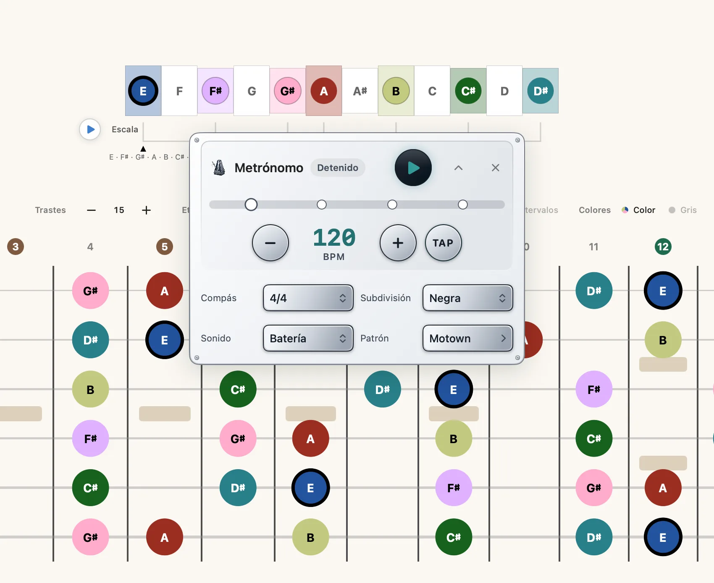
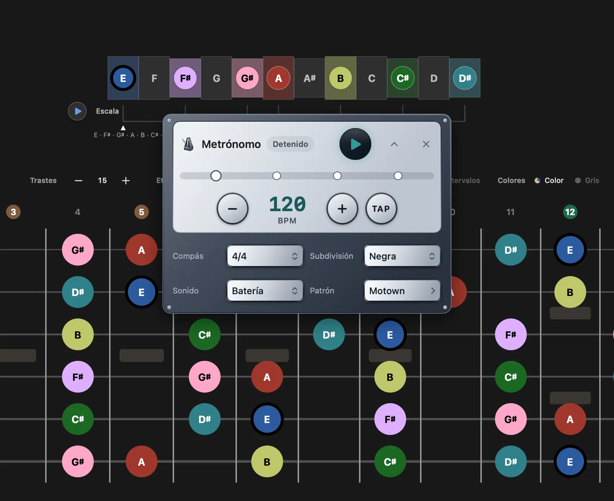
Secuenciador de batería Pro
Con el paquete de sonido Batería seleccionado, el metrónomo toca un patrón secuenciado por pasos en seis pistas (Crash, Ride, Hi-hat abierto, Hi-hat, Caja y Bombo) en lugar de un clic pelado. La batería es una batería acústica grabada, y cada golpe suena toda su duración natural: un bombo sigue sonando bajo los hi-hats que le siguen, y un hi-hat abierto suena hasta que el cerrado lo apaga, como en una batería real. Cada compás trae una biblioteca de ritmos musicales y no mecánica (los hi-hats en el pulso golpean más fuerte que los intermedios), así que 6/8 se siente como 6/8 sin que edites nada.
Abre el editor de patrones desde el metrónomo para crear los tuyos:
- La cuadrícula: una fila por pista, una columna por paso. Cada celda muestra qué tan fuerte cae ese golpe: el relleno sube desde el fondo de la celda hasta su nivel, lleno arriba del todo. La cuadrícula se desplaza de lado cuando un compás necesita más pasos de los que caben.
- Fija un nivel — toca una celda vacía para activarla al máximo; toca dos veces una celda para borrarla. Arrastra hacia arriba o abajo sobre una celda para subir o bajar su nivel —el valor aparece en un indicador sobre tu dedo y en el encabezado— o arrastra a lo ancho de la fila para pintar el nivel de esa celda en todas las que cruces. En la Mac, haz clic derecho sobre una celda para Completo, 75, 50, 25 o No.
- Reproduce mientras editas: el patrón se repite mientras trabajas, así que oyes cada cambio de inmediato.
- Compás y Subdivisión: cambia cualquiera de los dos desde la fila de transporte del editor, junto al tempo, y la cuadrícula se reagrupa para coincidir. Cada combinación conserva su propio patrón activo, así que cambiar carga ese; las ediciones sin guardar piden guardarse o descartarse primero.
- Filas enteras: haz clic derecho (o mantén presionado) el nombre de una pista para Llenar fila, Acentuar pulsos o Borrar fila. Acentuar pulsos conserva los golpes de la fila y les reasigna nivel como están hechos los predeterminados: completo en el pulso, más suave en medio.
- Biblioteca: cada compás y subdivisión trae ritmos que puedes cargar, 61 en total, en cuatro secciones. Un ritmo aparece solo en las subdivisiones que pueden sostenerlo: un funk de semicorcheas vive en Semicorchea, un shuffle en Tresillo. Las filas de género y clásicos muestran un tempo típico; cargar un clásico ajusta el metrónomo a él, cargar un género deja tu tempo en paz. También hay una sección Tus patrones para los que guardes. Guarda con un nombre, marca uno como activo, duplica uno como punto de partida, renombra o elimina; la hoja también lleva Nuevo, Guardar como… y Restablecer. Los patrones editados y sin guardar llevan la marca Editado, y cerrar con trabajo sin guardar pregunta antes de descartarlo. La barra espaciadora hace sonar el clic desde dentro de la hoja, así que puedes oír el tempo mientras editas.
- Restablecer: restaura los pasos y niveles por defecto para el compás actual.
| Sección | Ritmos | Qué contiene |
|---|---|---|
| Básicos | 12 | Los grooves simples: Básico, Rock, Solo hi-hat, Claro, Shuffle y las agrupaciones de los compases impares: 3+2 y 2+3 en 5/4, 2+2+3, 3+2+2 y 2+3+2 en 7/8, 2+2+2+3 en 9/8. |
| Ritmos | 8 | Bloques de construcción más que estilos: Cuatro al piso, Pulse, Medio tiempo, Double-time, Sincopado, Ride, Crash en 1, Dotted. |
| Géneros | 31 | Desde Disco, House, Funk, Boom Bap y Trap pasando por One Drop, Ska, Motown, Bossa Nova, Reguetón, Swing y D-beat en Samba en 2/4, Vals de jazz en 3/4, Blues lento y Bembé en 12/8, y Aksak y Ruchenitsa en los compases impares. |
| Clásicos | 10 | Feels famosos, nombrados por el feel y no por el disco: Pies y palmas, Heavy Rock, Breakbeat, Snare on 4, Medio shuffle, Hard Rock, Grunge, Garage Rock, Galope, Funk Rock. |
Desde el propio panel del metrónomo, cambiar el compás o la subdivisión carga de inmediato el patrón activo de esa combinación; el editor es el lugar que pregunta primero.
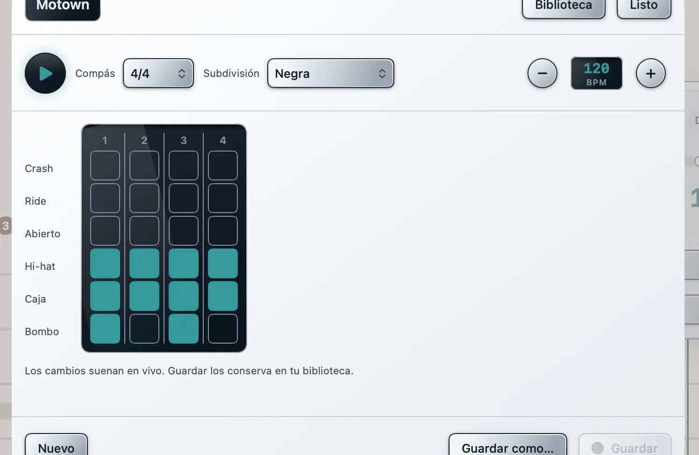
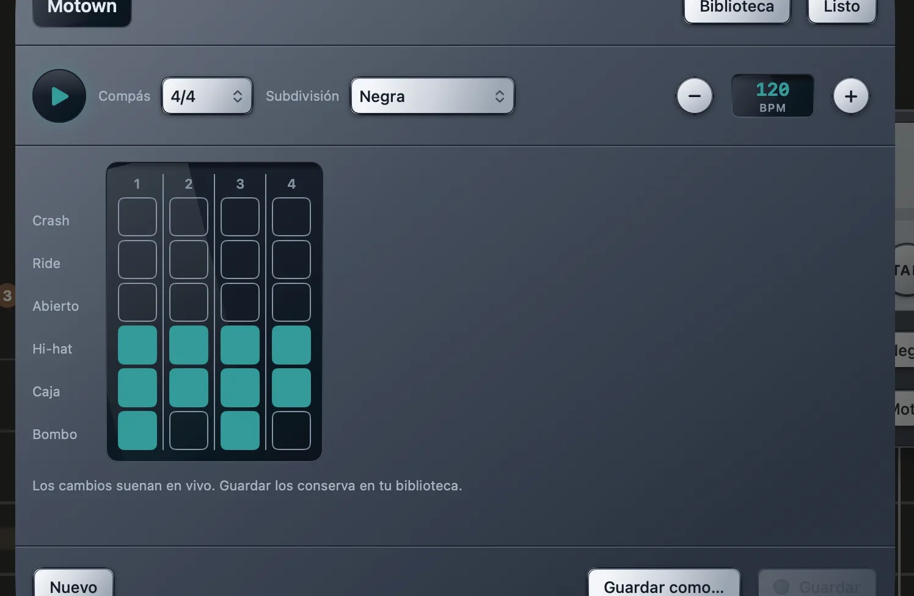
Amplificador de guitarra Pro
Conecta una guitarra a una interfaz de audio y monitoréala a través de un perfil de Neural Amp Modeler: las capturas de amplificador que se comparten como archivos .nam. Fretling incluye un conjunto de modelos iniciales y carga cualquier otro archivo .nam que le indiques.
El panel contiene solo asuntos del amplificador. Todo lo relativo a la entrada (qué interfaz, qué canal, cuánta ganancia, tamaño del búfer y frecuencia de muestreo) vive en la consola de entrada de la barra superior, porque el afinador y Detección en vivo escuchan por la misma entrada y nada de eso necesita un modelo cargado.
- Modelo: elige un perfil inicial (Limpio inicial (A1), Limpio inicial (A2), Acústico inicial, Cálido inicial o Crunch inicial) o Cargar .nam… para usar el tuyo. Una insignia nombra la generación del modelo cargado, y si un archivo usa un formato NAM más nuevo del que Fretling admite por completo, o trae controles integrados que Fretling aún no puede ajustar, el panel lo dice en lugar de sonar mal en silencio.
- Monitor / Detener: inicia y detiene el monitoreo en vivo. Detener libera de verdad el micrófono; un loop que está sonando sigue sonando.
- Ganancia de salida: nivel a la salida de la cadena del amplificador.
- Nivel de entrada del modelo y Nivel de salida del modelo: ajuste fino alrededor del propio modelo, que es cómo compensas un perfil capturado muy caliente o muy bajo.
- Tamaño del modelo: aparece para un modelo que trae varios tamaños de la misma red, desde Ligero hasta Completo. Los tamaños más pequeños usan menos CPU y conservan menos detalle; Completo es el modelo tal como se capturó, y es el que se carga por defecto.
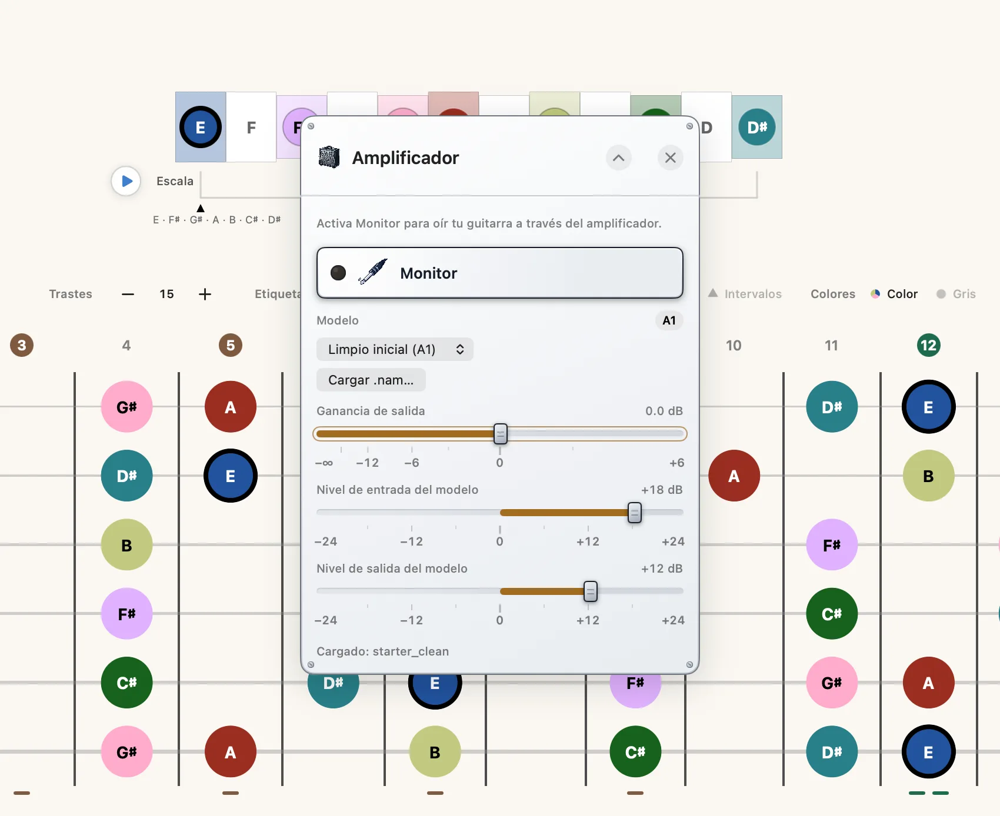
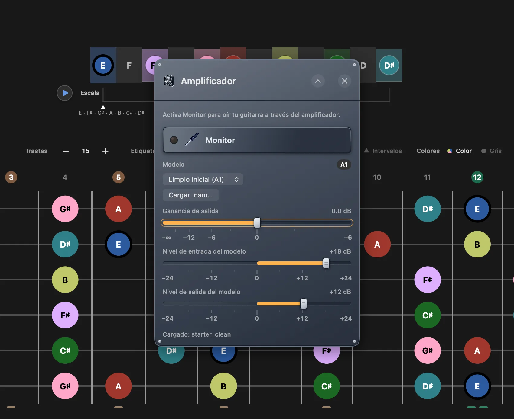
Un archivo .nam que cargas se copia al propio almacenamiento de Fretling, así que el modelo sigue ahí después de reiniciar aunque desde entonces hayas movido o borrado el archivo del que lo cargaste.
Entrada
Elegir una interfaz no es una cuestión del amplificador, así que no vive en él. La barra superior lleva una lámpara de micrófono y un medidor de nivel: la lámpara es el interruptor maestro, y el medidor muestra lo que llega antes de que abras herramienta alguna. Presiona el medidor para abrir la consola, que es donde vive cada ajuste de entrada, para el amplificador, el afinador y Detección en vivo por igual.
La lámpara se enciende siempre que el micrófono está realmente abierto en algún lugar, ya sea que lo abrieras tú o que lo hicieran el afinador, Detección en vivo o el Monitor del amplificador. Presionar una lámpara encendida es siempre la liberación: suelta todo a la vez, y cada herramienta que escucha por ella se detiene. Un loop que ya está sonando sigue sonando. En ambas plataformas el mismo interruptor está en el menú Entrada como Encender / apagar el micrófono, en ⌘⇧M.
Si el sistema rechaza el micrófono, la lámpara muestra un micrófono tachado con un borde rojo y la consola se abre sola con el motivo indicado y Abrir la configuración de Sonido — Abrir Configuración en iPad, al alcance.
La consola se abre en Nivel, que es lo que necesitas a media sesión, y deja el enrutamiento y los tiempos detrás de Ajustes.
- Micrófono: el mismo interruptor maestro que la lámpara. Debajo, una línea de estado dice qué está pasando, y cuando otra cosa retiene la entrada nombra cuál: En uso por Amp · Afinador · Detección en vivo, así que apagarlo nunca es una sorpresa.
- Ganancia de entrada: se aplica antes de que nada escuche, así que el amplificador, el afinador y Detección en vivo oyen el mismo nivel.
Bajo Ajustes:
- Dispositivo de entrada: la interfaz en la que está tu guitarra. En Mac, un dispositivo de audio; en iPad, una de las entradas que ofrece iPadOS. En cualquier caso, si uno guardado ya no está, el selector lo dice en lugar de fallar en silencio.
- Canal: en cuál de las entradas de esa interfaz está conectada tu guitarra. Aparece siempre que la entrada tiene más de una, y lo dice claramente cuando todavía no hay entre qué elegir.
- Ruta (iPad): a qué se resolvieron realmente la entrada y la salida. iPadOS sigue eligiendo la salida por ti: conecta audífonos o una interfaz y cambia automáticamente. La consola avisa aquí cuando la ruta se retroalimentaría.
- Tamaño del búfer: el intercambio de latencia. De 16 a 1024 cuadros en la Mac, de 64 a 1024 en iPad, y 128 es la recomendación. iPadOS nunca concede nada por debajo de 64, así que ofrecer 16 o 32 ahí sería un control que en silencio no hace nada.
- Frecuencia de muestreo — Sistema (deja el dispositivo como está), 44.1, 48 y 96 kHz. 48 kHz es la recomendación y la fila lo dice: los modelos NAM se entrenan a 48 kHz, así que nada en la ruta del amp se remuestrea, y es la frecuencia a la que está ajustada la etapa gruesa del afinador. 88.2 y 192 kHz no se ofrecen aquí a propósito —no aportan nada en la ruta del amp y multiplican el trabajo de la red—, aunque la cadena de procesamiento las maneja si el dispositivo está configurado así desde otro lado. En iPad ambos son solicitudes y no ajustes: iPadOS las responde cuando arranca la entrada, así que una línea bajo los selectores informa lo que concedió de verdad.
- Latencia: la latencia de monitoreo resultante, informada en milisegundos para que el intercambio sea un número y no una suposición.
Cada deslizador tiene marcas, una lectura en dB y un restablecimiento a su valor por defecto con doble clic.
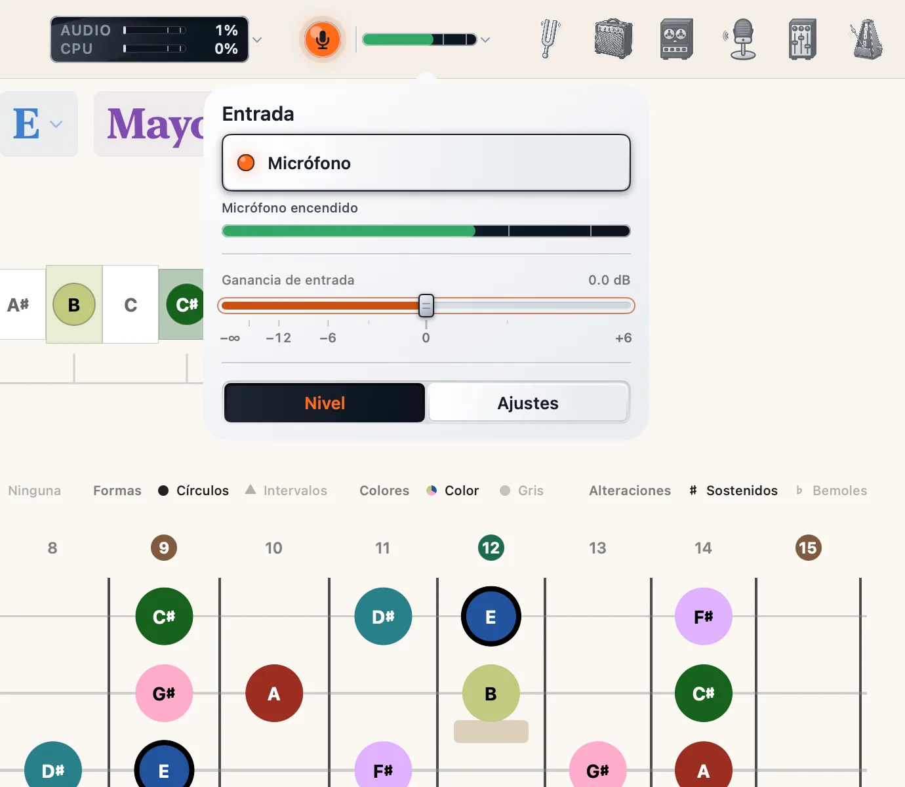
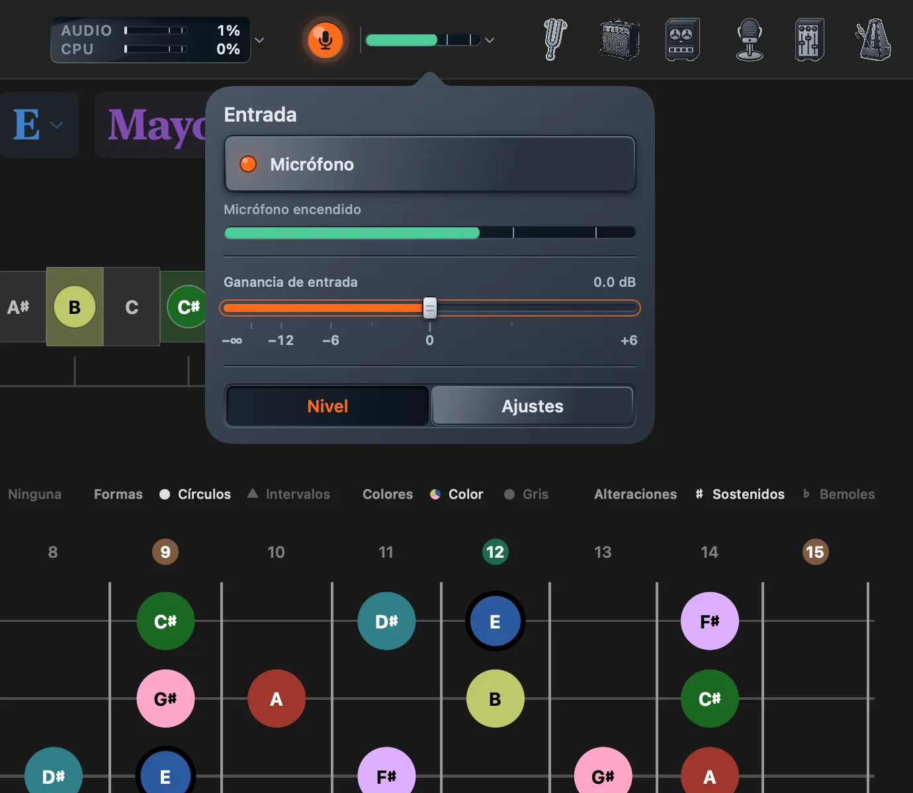
Rendimiento
Fretling hace muchas cosas a la vez (un modelo de amp, un looper, el afinador y Detección en vivo escuchando, el clic), así que la barra superior muestra cuánto está trabajando, en un pequeño indicador a la izquierda de la lámpara del micrófono. Dos filas:
- Audio: cuánto del tiempo de cada ciclo de audio están usando los motores de audio. Es el número que anticipa problemas: al acercarse al 100% el motor se queda sin tiempo para llenar el siguiente búfer y se oyen clics o cortes. La barra se pone ámbar por encima del 70% y roja por encima del 90%.
- CPU: la parte de toda tu Mac o iPad que usa Fretling, el número detrás de los ventiladores y la batería.
Presiona el indicador para abrir la consola de Rendimiento. Muestra los dos motores de audio por separado: Reproducción lleva las notas, los acordes y el clic; Amp lleva el modelo de amp y el looper, y marca Apagado mientras el amp está apagado; cada uno con el búfer contra el que se mide (muestras, frecuencia de muestreo y los milisegundos que tiene un ciclo) y un conteo de sobrecargas: ciclos que se pasaron de su plazo desde que arrancó ese motor. Bajo una línea, la parte de CPU y un aviso cuando la propia máquina se está calentando y puede estar frenando las cosas.
Si Audio se pone alto, sube el tamaño del búfer en Configuración de entrada o elige un modelo de amp más pequeño. Un búfer más grande da más tiempo a cada ciclo; un modelo más pequeño necesita menos.
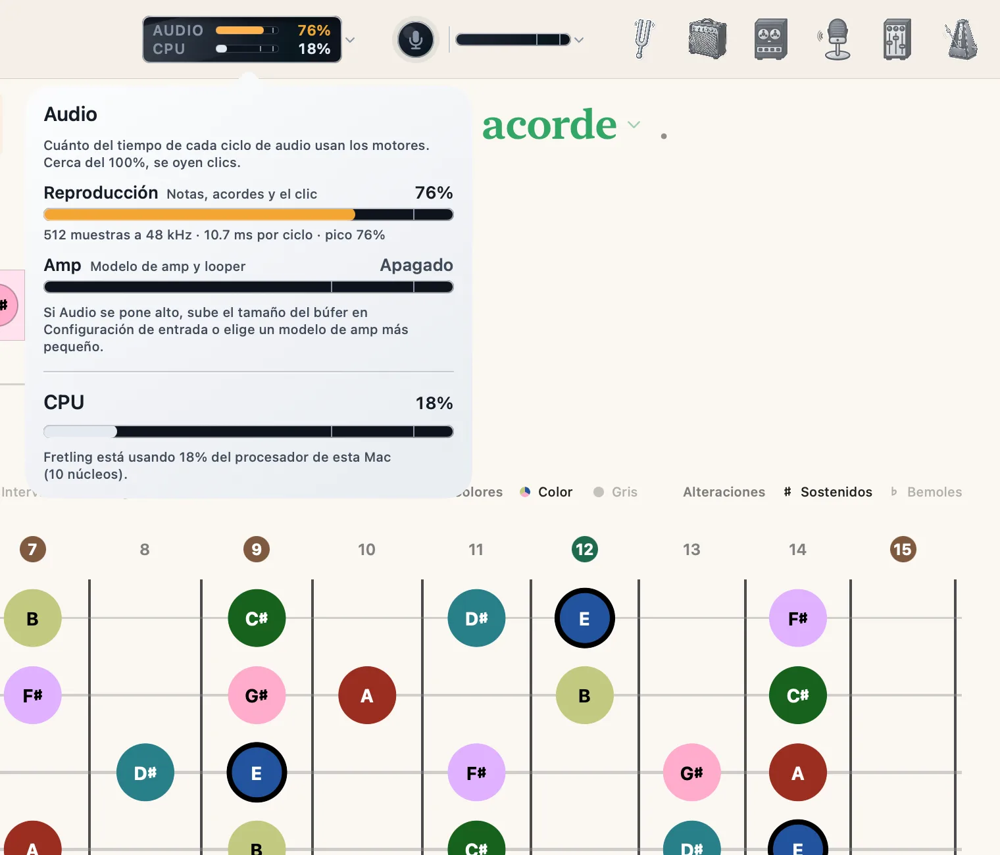
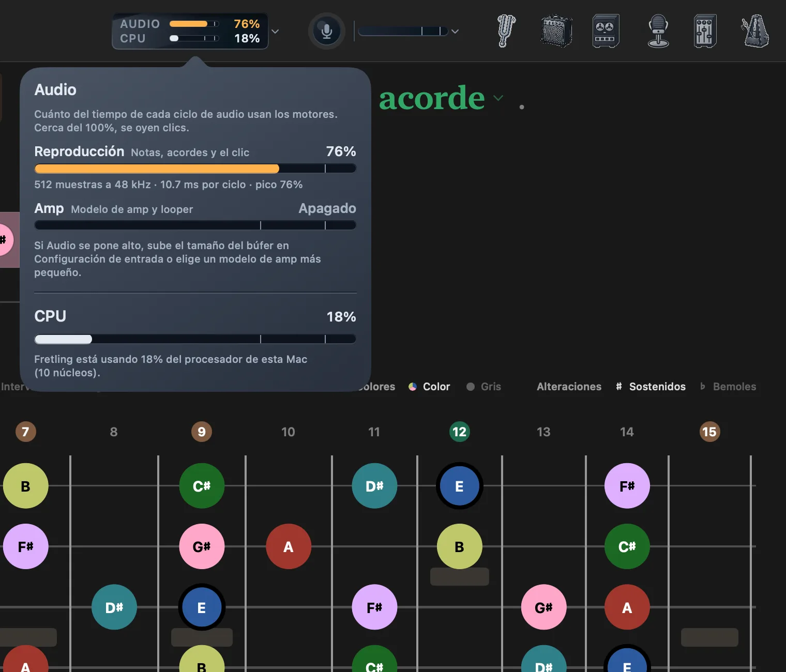
Looper Pro
Graba una frase y toca encima. El looper está en la cadena de monitoreo del amplificador, así que enciende primero Monitor en el amplificador; el looper te lo dice si no lo has hecho. Una vez que existe un loop, sigue sonando solo: apagar Monitor libera el micrófono pero deja el loop corriendo, y Reproducir lo trae de vuelta incluso con el amplificador apagado.
Un botón grande maneja la toma, y su etiqueta siempre dice qué hará a continuación:
- Grabar: inicia la toma, tras la cuenta de entrada si fijaste una; mientras corre la cuenta, el mismo botón se lee Cancelar. Presiónalo de nuevo, ahora con el texto Fijar loop, para cerrar el loop y ponerlo a sonar. Con Compases fijado se cierra solo en la línea de compás, y una toma de duración libre se cierra a los 60 segundos si no la has cerrado tú.
- Overdub: mientras el loop suena, presiona de nuevo para grabar una capa nueva encima; Terminar overdub conserva la capa. Apila tantas como quieras.
- Deshacer / Rehacer: quita la última capa de overdub, o la vuelve a poner.
- Reproducir / Detener: detiene el loop y lo arranca de nuevo en la línea de compás. Con el loop detenido, el botón grande se lee Grabar nuevo: presiónalo y una toma nueva reemplaza el loop anterior.
- Borrar: desecha el loop.
Bajo el transporte:
- Compases — Libre, 1, 2, 4 u 8. Con una duración fijada, la grabación se detiene sola en la línea de compás, así que el loop queda a tiempo sin que lo atrapes a mano; Libre te deja el cierre a ti.
- Cuenta de entrada — No, 1 o 2 compases de clics antes de que empiece la grabación.
- Clic al grabar: mantiene el metrónomo audible durante la toma. Aplica a la primera toma y no hace nada cuando el clic ya está en marcha, porque entonces no le queda nada que arrancar.
- Volumen del loop: qué tan fuerte suena el loop debajo de ti.
- Desvanecimiento de capas: cuánto se atenúan las capas anteriores conforme apilas nuevas encima. La parte superior de la regla dice Nunca en vez de un número, porque lo que significa ahí es que no se atenúa nada.
El botón de grabar hace también de lectura de pulsos: la cuenta de entrada cuenta hacia atrás hasta la entrada, luego el pulso cuenta el compás hacia adelante, y una línea de estado bajo los controles nombra el estado (grabando, reproduciendo, overdub) con el compás y el tiempo. Cambiar la frecuencia de muestreo borra el loop (la grabación ya no coincide con el motor) y el looper te avisa cuando eso ha pasado.
Los loops viven en memoria solo durante la sesión. Nada se escribe en disco, y salir de la app los descarta.
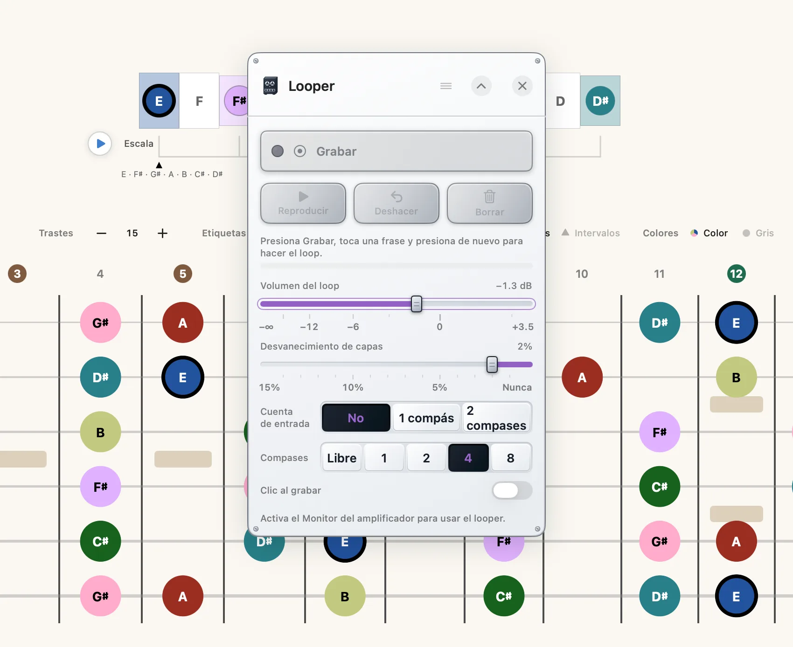
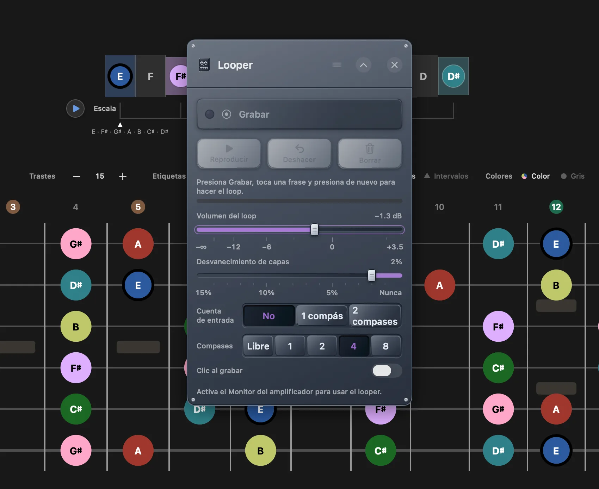
Mezclador
Un panel para cada sonido que hace Fretling, para que los equilibres en lugar de buscar el nivel que está demasiado alto.
| Canal | Controla |
|---|---|
| Notas | Las notas que tocas en el mástil y la reproducción de escalas. |
| Acorde | Los acordes reproducidos desde la línea de tiempo y el Atlas de acordes. |
| Prog | Reservada para la reproducción de progresiones, que no forma parte de esta versión. La tira está ahí y todavía no tiene nada que controlar. |
| Clic | Metrónomo y batería. |
| Amp | Tu guitarra monitoreada. |
| Loop | La reproducción del looper. |
| Mix | La salida maestra. |
Cada canal excepto Mix tiene silencio y solo; una insignia en el panel te recuerda cuando algo está silenciado o en solo, así que una app callada nunca es un misterio. Silenciar manda sobre solo: un canal que silenciaste sigue callado aunque lo pongas en solo, así que un solo nunca puede quitar el silencio a tus espaldas. Principal es un fader de salida simple y está exento de ambos.
Casi todas las tiras van de 0 a 1 y arrancan al máximo. Amp llega a 2 y arranca en 0.8, igual que el deslizador Salida del propio panel del amp; Loop llega a 1.5 y arranca en 0.9, igual que el volumen de Loop del looper; Clic arranca en 0.8. Los niveles se conservan entre sesiones. Un solo no: reabrir la app en solo, casi en silencio, sería un acertijo y no un ajuste.
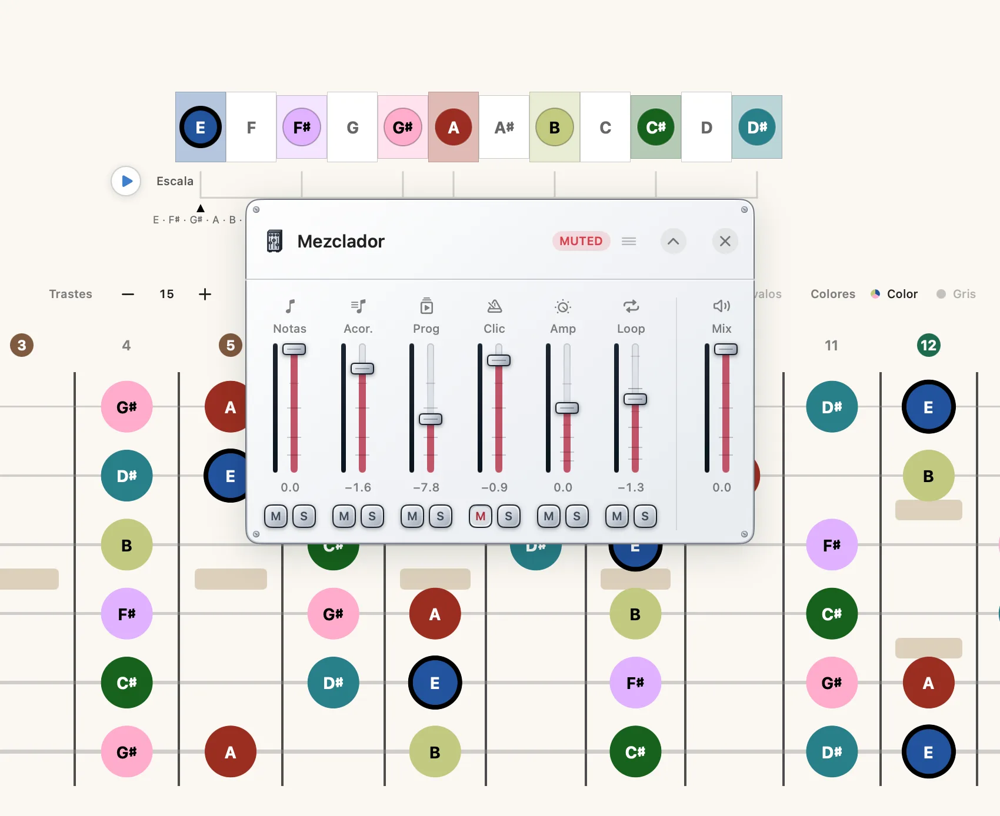
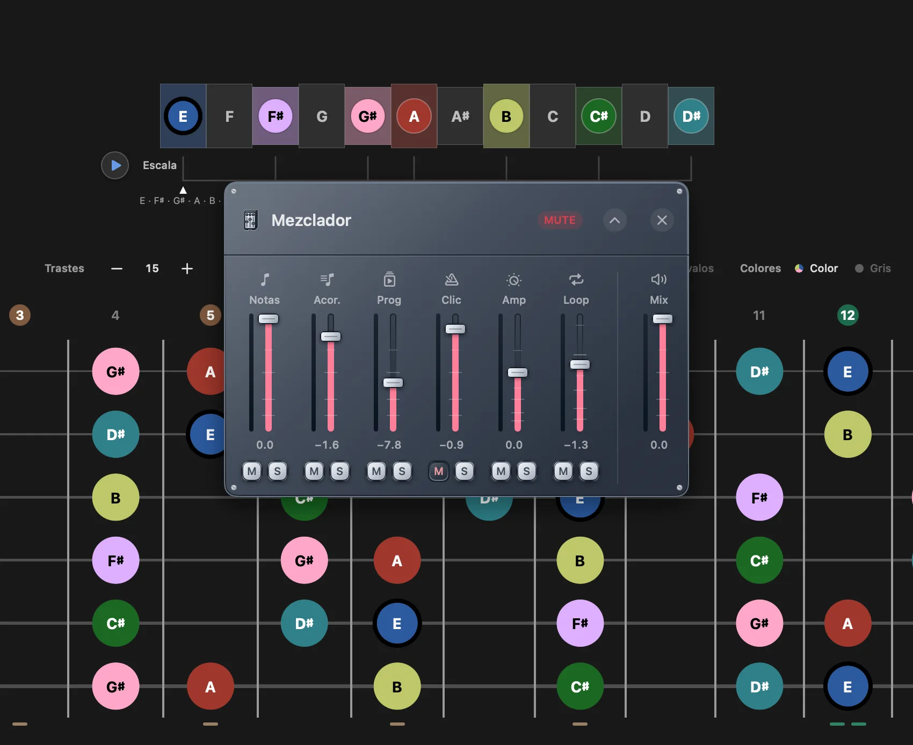
Detección en vivo Pro
Detección en vivo escucha lo que tocas y lo marca en el mástil en tiempo real, para que compruebes que lo que estás digitando es lo que crees.
El panel es un pozo de escucha con un solo control debajo: Escuchar, que pasa a ser Detener mientras está en marcha. Encima, una línea de estado dice qué está pasando antes de que hayas tocado nada: Toca Escuchar para detectar lo que tocas. En cuanto llegan notas, la lectura las nombra: una altura sola como nota, varias a la vez como el acorde que deletrean, y ambas se deletrean según esté Alteraciones, así que una lectura de aquí coincide con el mástil en vez de contradecirlo.
En el mástil, lo que Detección en vivo oye se marca con anillos y no con relleno. Los anillos son a propósito una marca distinta del resalte que lleva una nota reproducida, porque las dos responden preguntas distintas: esto es lo que estás tocando frente a esto es lo que Fretling está tocando, y pueden estar en pantalla al mismo tiempo.
Plegada a una tira, Detección en vivo conserva su lectura: la tira es una pantalla en vivo de lo que está oyendo, así que puedes dejarla funcionando en el borde de la pantalla y echarle un vistazo mientras tocas.
En el modo identificar gana un botón Enviar al diapasón, que toma las notas que acaba de oír y las coloca en el mástil como una consulta de identificación: toca un acorde que no sepas nombrar, mándalo y lee las respuestas clasificadas. Ese botón existe solo en identificar; en los modos de aprendizaje el panel informa, y el mástil es del sujeto que estás aprendiendo.
Sin Pro, el panel igual se abre. Dice qué es: Detección en vivo es parte de Fretling Pro. y Toca al micrófono: las notas y acordes que Fretling oye se encienden en el diapasón. y lleva un botón de desbloqueo. El micrófono nunca se abre mientras está bloqueado.
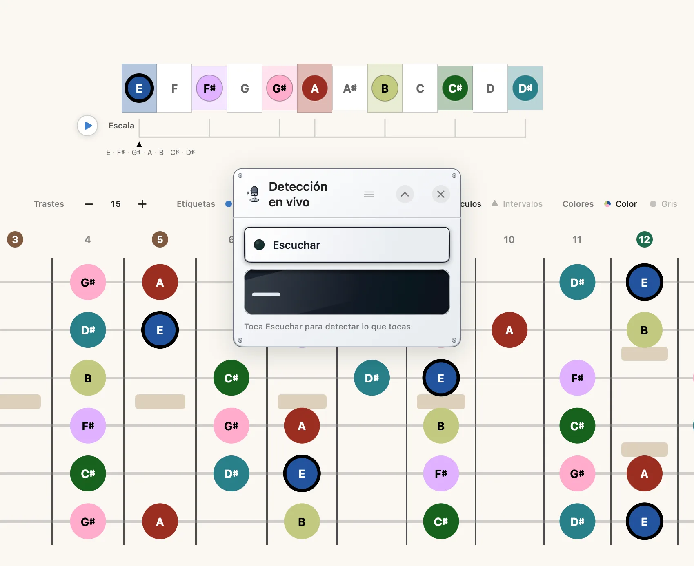
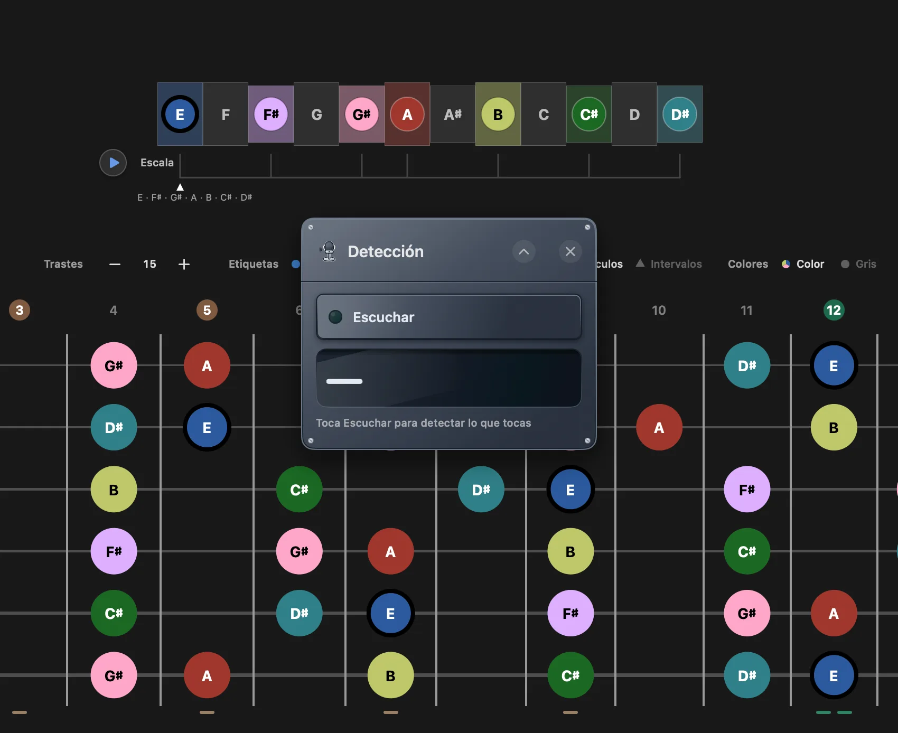
Acceso al micrófono
El afinador, Detección en vivo y el amp necesitan entrada de audio, así que la primera vez que abres uno —o enciendes el micrófono desde la barra superior— tu dispositivo pide permiso. El aviso que muestra son las propias palabras de Fretling, y nombra qué lo está pidiendo: «Fretling necesita acceso al micrófono o a la interfaz de audio para monitorear tu guitarra con Neural Amp Modeler y para el afinador cromático mientras practicas.» El audio se analiza en vivo y nunca se graba, se guarda ni se transmite. La captura se detiene cuando cierras las herramientas, y apagar la entrada desde la barra superior libera el micrófono en todas partes a la vez. El detalle completo está en la política de privacidad.